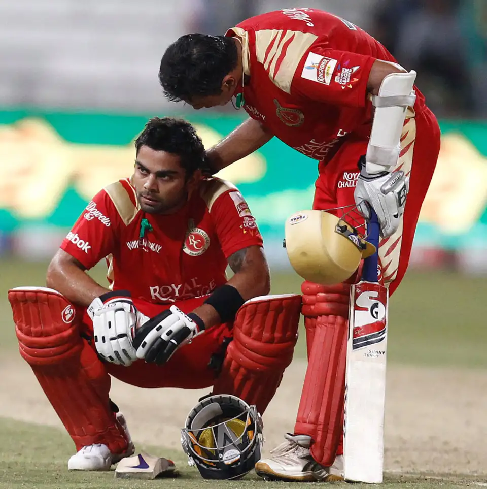
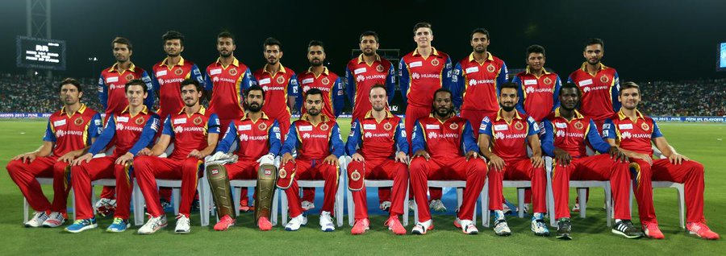
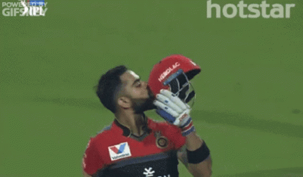
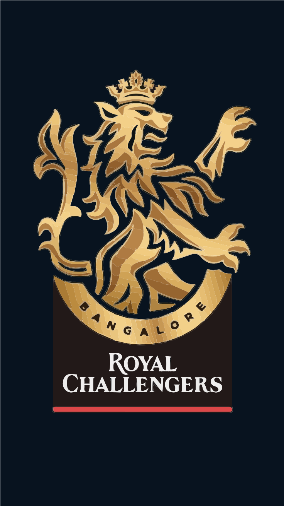
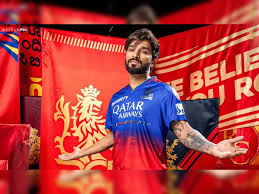
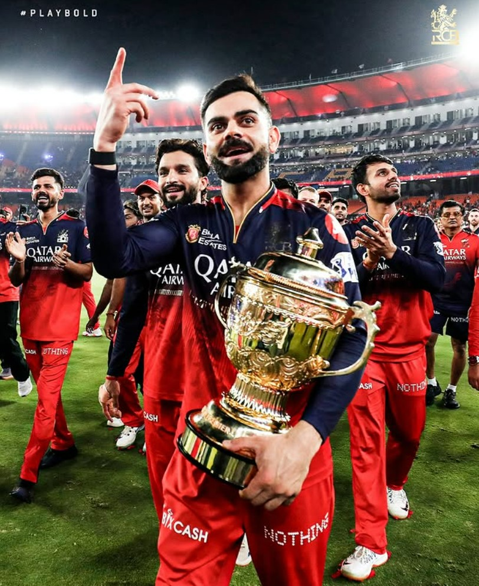

PNG
PNG
PNG

JPG

JPG
JPG

GIF

GIF
GIF

SVG

SVG
SVG

WEBP

WEBP
WEBP

| SEASON | YEAR | CAPTAIN | POSITION | WINS | YEARLY SUMMARY | HIGHLIGHTS | WALL OF FAME |
|---|---|---|---|---|---|---|---|
| 1. | 2008 | Rahul Dravid | 7th Position | 4/14 | RCB’s inaugural season was disappointing, with inconsistent performances and lack of cohesion. The team struggled to find its rhythm under Rahul Dravid’s captaincy and ended up finishing second last on the points table. | Debut IPL season | PNG |
| 2. | 2009 | Anil Kumble | Qualifiers | 9/16 | RCB made a remarkable comeback in the South Africa-hosted edition of the IPL. Led by Anil Kumble, the team gelled well and reached the final, narrowly losing to Deccan Chargers in a close contest, gaining momentum and fans along the way. | Finalists in South Africa | PNG |
| 3. | 2010 | Anil Kumble | Qualifiers | 7/16 | RCB put up another strong performance, reaching the semi-finals. With Jacques Kallis, Robin Uthappa, and Virat Kohli among the top contributors, the team looked well-balanced, although they fell short in the playoffs. | Semi-finalists again |  PNG |
| 4. | 2011 | Daniel Vettori | Runner up | 9/16 | Chris Gayle, brought in as a replacement, delivered historic performances, including a 100* on debut. RCB topped the league stage and reached the final, only to lose to CSK again. It was a season of high expectations and entertainment. | Chris Gayle’s debut season | JPG |
| 5. | 2012 | Virat Kohli | 5th Position | 8/16 | Despite explosive batting from Gayle and de Villiers, RCB couldn’t maintain consistency and missed the playoffs by a narrow margin. Their over-reliance on the top order proved to be their Achilles' heel. | Gayle wins Orange Cap | JPG |
| 6. | 2013 | Virat Kohli | 5th Position | 9/16 | The season was marked by record-breaking performances, including Gayle’s unbeaten 175. However, bowling weaknesses and away losses hurt RCB’s playoff chances. The entertainment was high, but results didn’t match. | Highest team total in IPL |  JPG |
| 7. | 2014 | Virat Kohli | 7th Position | 5/14 | The season was split between UAE and India, and RCB struggled in both. Despite the presence of big names, the team never found rhythm and ended with another forgettable season. | Poor UAE leg performance | GIF |
| 8. | 2015 | Virat Kohli | Qualifiers | 7/16 | RCB had one of the most feared batting lineups. They reached Qualifier 2 but lost to CSK. It was a season of near misses, but the team was clearly shaping up into a strong contender. | ABD-Gayle-Kohli peak era | GIF |
| 9. | 2016 | Virat Kohli | Runner up | 9/16 | Arguably RCB’s best season ever, with Virat Kohli scoring a record 973 runs including 4 centuries. The team reached the final and lost a close match to SRH. Fans still cherish this high-octane season. | Kohli's 973 runs – IPL record |  GIF |
| 10. | 2017 | Virat Kohli | 8th Position | 3/14 | A nightmarish season with multiple batting collapses, including the lowest ever IPL score. Injuries and poor form haunted the team, leading to a last-place finish. | Lowest team total in IPL | SVG |
| 11. | 2018 | Virat Kohli | 6th Position | 6/14 | Despite a few memorable games, RCB lacked bowling depth and consistency. The Kohli-de Villiers duo impressed, but the team couldn’t break into the top four. | Kohli-ABD strong pair | SVG |
| 12. | 2019 | Virat Kohli | 8th Position | 5/14 | After losing the first six games, RCB recovered to some extent but couldn't make up the early deficit. Individual brilliance couldn’t rescue a poor campaign. | Kohli’s 100 vs KKR |  SVG |
| 13. | 2020 | Virat Kohli | Qualifiers | 7/15 | RCB finally made it to the playoffs after 4 years, driven by a more balanced squad. However, they lost steam towards the end, exiting in the Eliminator. Still, a step forward. | COVID bubble, UAE edition | WEBP |
| 14. | 2021 | Virat Kohli | Qualifiers | 9/15 | A solid season with consistent wins early on. Maxwell’s form and a stable team helped them reach the playoffs, but once again, the team faltered under pressure in the knockout. | Maxwell’s key role | WEBP |
| 15. | 2022 | Faf du Plessis | Qualifiers | 8/16 | RCB had a new captain in Faf du Plessis and made it to Qualifier 2. Strong performances by DK, Patidar, and Hasaranga were highlights in a good overall season. | Rajat Patidar’s century |  WEBP |
| 16. | 2023 | Faf du Plessis | 6th Position | 7/14 | The team fought hard till the last league game but missed playoffs. Kohli’s form returned, but middle-order and death bowling remained concerns. | Kohli’s two centuries | |
| 17. | 2024 | Faf du Plessis | Qualifiers | 7/15 | RCB scripted a dramatic comeback, winning 6 matches in a row to qualify. However, they were knocked out in the Eliminator by Rajasthan Royals. Still, it was one of their most spirited seasons. | 6-match winning streak | |
| 18. | 2025 | Rajat Patidar | Champions | 11/16 | In 2025, RCB finally won their first IPL trophy, making history and fulfilling their fans' long-awaited dream! | Ee Sala Cup |
 |